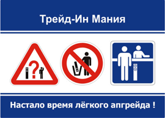

В рамках программы "Трейд-Ин Мания" при покупке
новых акустических систем мы принимаем старые,
принадлежащие покупателю громкоговорители с
зачётом их полной розничной стоимости. Данная
услуга является уникальной на российском рынке
и позволит вам легко и без лишних затрат осуществить
модернизацию вашей системы.
Аудиомания всегда старается следовать мировым
тенденциям, которые помогают стать ближе к
покупателям. Поэтому, впервые на российском
рынке, при поддержке производителей акустических
систем Penaudio, Arslab, Davis Acoustics, Ceratec,
Raidho и Legacy Audio, мы предлагаем вам стать
участниками нашей программы "Трейд-Ин Мания".
C полными правилами программы "Трейд-Ин Мания"
вы можете ознакомиться на странице акции:
www.audiomania.ru/news/art-254.html, по специальной
горячей линии
8-800-555-1580, а также в магазинах Аудиомании.